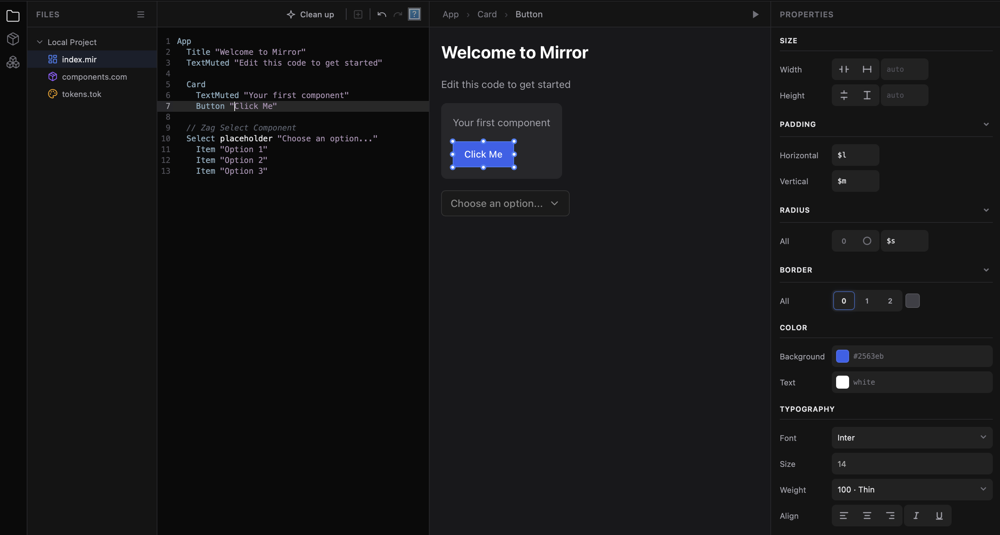

Was ist Mirror?
Die Entwicklungsumgebung für Designer
AI generiert heute Code. Designer können ihn nicht mehr lesen.
Wer mit AI ein UI baut, bekommt tausend Zeilen Framework-Logik zurück – drei Bibliotheken, Klassennamen, die niemand pflegt. Jede Anpassung wird zum Prompt. Der Designer ist im eigenen Produkt zum Beobachter geworden.
Mirror ist die Antwort darauf: eine Sprache, die für beide Leser gemacht ist – kurz genug, dass Designer sie schreiben und lesen, präzise genug, dass LLMs sie generieren.
Das ist kein Implementierungsdetail eines Buttons. Das ist der Button. Ändere #2271C1 auf #10b981, und er wird grün. Ändere pad 12 24 auf pad 16 32, und er wird größer. Keine versteckten Dateien, keine Build-Schritte, keine Frameworks.
Drei Sichten, eine Datei
Im Mirror Studio wird derselbe Code zu drei Sichten – Editor, Preview, Property-Panel –, die immer synchron bleiben. Tippst du eine Zeile, erscheint das Element. Ziehst du am Padding-Handle, ändert sich genau diese Zeile. Klickst du eine Farbe im Panel, steht sie im Code.

Mirror compiliert zu DOM oder React. Was du baust, läuft. Aber das Eigentliche an Mirror ist die Sprache selbst: ein Format, in dem Designer, AI und Entwickler am gleichen Artefakt arbeiten – direkt, ohne Übersetzung.
AI, die mit Designern arbeitet – nicht für sie.
Komponenten machen den Code zu einem Dokument
Definiere ein Element einmal, und seine Verwendung wird zur Sache selbst:
Keine Attribute mehr bei der Verwendung. Nur noch Struktur und Inhalt – wie ein Dokument, das das UI beschreibt.
Die Styling-Eigenschaften verwenden kurze Abkürzungen: bg (background), pad (padding), rad (radius), col (color), fs (font-size). Du lernst sie nebenbei.
Hierarchie durch Einrückung
Kinder werden eingerückt. Keine schließenden Tags, keine Klammern. Die Struktur ist sichtbar:
Der Code sieht aus wie ein Baum, weil er ein Baum ist.
Von Element zu Komponente: Ein Zeichen
Du hast einen Button gebaut und willst ihn wiederverwenden? Füge einen Namen mit Doppelpunkt hinzu:
Keine separate Datei. Kein Import. Kein Export. Die Definition ist dort, wo du sie brauchst.
Tokens für Design-Systeme
Farben, Abstände, Radien – definiere sie einmal, verwende sie überall:
Tokens + Komponenten = konsistentes Design ohne Wiederholung.
States ohne Komplexität
Interaktionen sind States. Ein State beschreibt, wie ein Element in einem Zustand aussieht:
hover: – wenn die Maus darüber ist. on: – wenn aktiviert. toggle() – bei Klick den State wechseln (Klick ist Default).
Ein State kann sogar komplett andere Inhalte haben:
Animation und Logik
States können animiert werden – füge einfach eine Dauer hinzu:
hover: springt, hover 0.2s: gleitet. Für Logik schreibst du eigene Funktionen – in einer einfachen Syntax ohne Klammern:
Input name EmailInput Button "Absenden", absenden() function absenden() wert = EmailInput.value Hinweis.content = "Gesendet: " + wert
Arbeite wie du willst
Mirror ist Text. Du kannst es schreiben in:
- Jedem Texteditor – VS Code, Sublime, vim
- Mirror Studio – einer IDE mit Live-Preview, visuellem Editing und Property-Panel
In Mirror Studio siehst du Code und Ergebnis nebeneinander. Ändere den Code, das Preview aktualisiert sich. Klicke ins Preview, der Code wird selektiert. Beides bleibt synchron.
Mensch + AI = besseres Design
Mirror wurde für die Zusammenarbeit mit AI entwickelt:
Du: "Erstelle eine Card mit Avatar, Name und Rolle" AI: generiert Mirror-Code Du: "Der Avatar soll größer sein" AI: ändert `is 24` → `is 32` Du: siehst die Änderung, verstehst sie, kannst selbst weiter tweaken
Das ist der entscheidende Unterschied: Du bist nicht ausgeliefert. Du verstehst was die AI generiert hat. Du kannst selbst eingreifen – eine Farbe ändern, einen Abstand anpassen, ein Element verschieben. Der Code gehört dir.
Dieses Tutorial
Die folgenden Kapitel führen durch alle Konzepte:
| Die Sprache | |
|---|---|
| 01-03 | Grundlagen – Elemente, Komponenten, Tokens |
| 04-05 | Layout & Styling – Flex, Grid, Farben, Effekte |
| 06-08 | Interaktion – States, Animationen, Functions |
| 09-10 | Daten & Struktur – Variablen, Binding, Seiten |
| Komponenten-Bibliothek | |
| 11 | Eingabe – Forms, Selection, DateTime |
| 12 | Navigation – Tabs, SideNav |
| 13 | Overlays – Dialog, Popover, Tooltip |
| 14 | Tabellen – Statische und datengebundene Tabellen |
Jedes Kapitel enthält interaktive Beispiele – der Code kann direkt bearbeitet werden, das Ergebnis erscheint live.
Das Wichtigste
| Konzept | Syntax |
|---|---|
| Element mit Properties | Button "Text", bg #2271C1, pad 12 |
| Hierarchie | 2 Leerzeichen Einrückung |
| Komponente definieren | Btn: (mit Doppelpunkt) |
| Komponente verwenden | Btn "Text" (ohne Doppelpunkt) |
| Token definieren | primary.bg: #2271C1 |
| Token verwenden | bg $primary |
| State definieren | on: oder hover: |
| State wechseln | toggle() |
Das Prinzip: Mirror ist lesbar wie ein Dokument. AI generiert Code, du verfeinerst ihn – ohne Framework-Wissen.